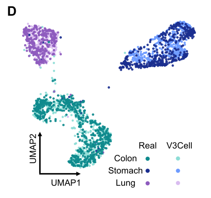

V3Cell
中央腔隙静态表型
同一亚型的真实与虚拟样本，有多相似？
选一个谱系和亚型，两排图会一起更新。对照每个独立样本的轮廓、出芽和腔隙。
看表型分布

图 2 · 单类器官明场 ROI，64 × 64 像素
动态命运
同一时刻，三种结局有什么不同？
这里展示独立的羊膜囊类器官研究。拖动培养时间，在同一时刻比较三条虚拟轨迹。
怎样从早期形态判别命运？
分类器读取第 5 帧。时序模型结合前 6 帧和命运条件，推演后续 19 帧。右侧展示论文选取的 7 个时点。
图 5A · 虚拟轨迹选帧 / 48–96 小时